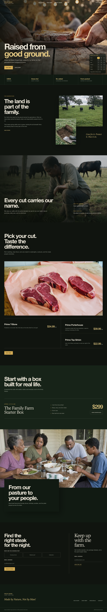
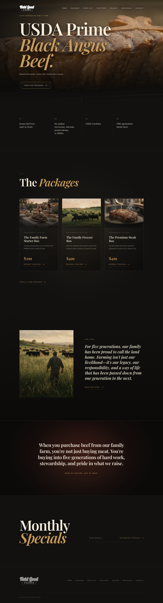
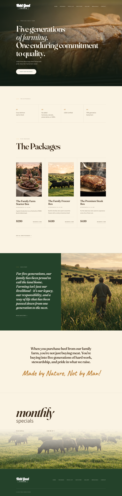
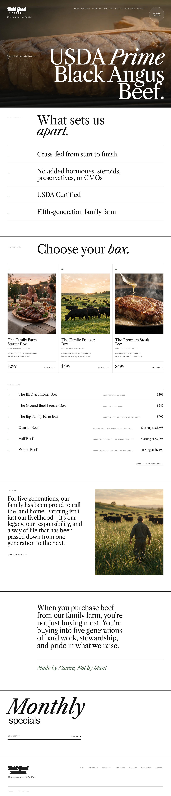
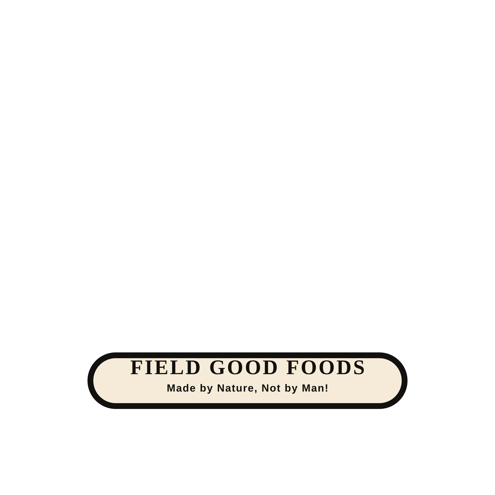
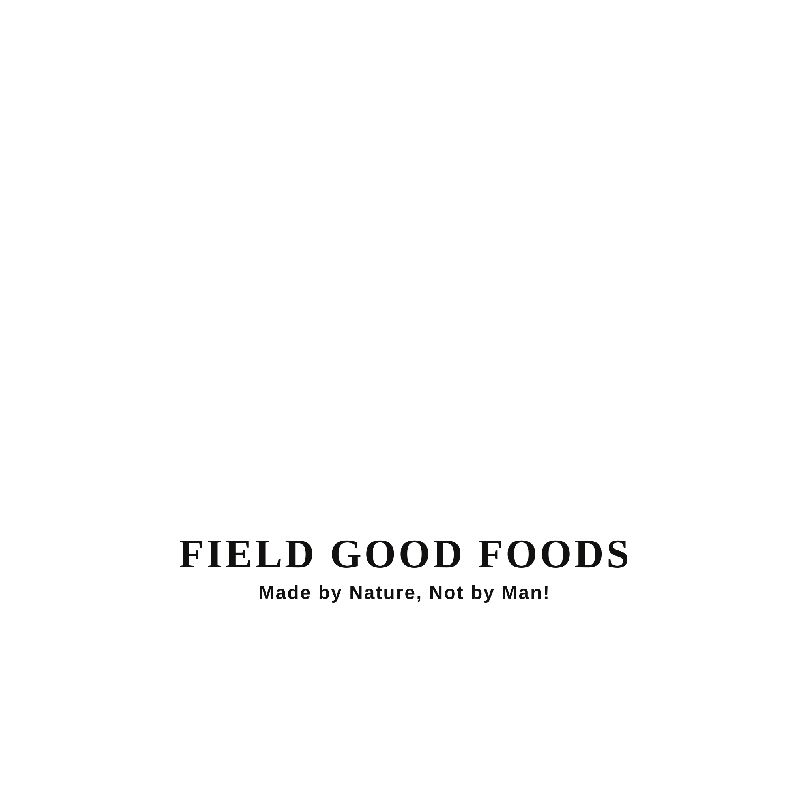

Soil to Supper
A dark, cinematic farm story that moves from pasture and working hands into real cuts, freezer boxes, and a multigenerational family table.
View live Mobile viewFive homepage directions, built from the same farm story. The latest revision is first; open it live to see the motion and the mobile layout.

A dark, cinematic farm story that moves from pasture and working hands into real cuts, freezer boxes, and a multigenerational family table.
View live Mobile view
The revised homepage turns the farm-to-kitchen journey into four scroll chapters, with the yellow, green and black palette Travis requested.
View live
Dark and cinematic, a premium steakhouse read with the beef lit against near-black and the type kept restrained. This is the closest of the three to 1855beef.com, the reference Travis liked.
View live Mobile view
Warm and sunlit, a family-BBQ feel built on pasture greens, wood tones and open daylight. It matches the Field Good Foods brand language and the tone of the approved trailer.
View live Mobile view
Light and editorial, a food-magazine layout with big display type, hairline rules and plenty of whitespace. The photography carries the page instead of the background.
View live Mobile viewCompare ten directions, including three refined concepts and seven earlier generated samples.



{kind=link}
{kind=link}
{kind=link}
{kind=link}